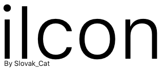

The repo of Apple system icons.
all iOS icons
iOS13
iOS12
iOS11
iOS10
© 2020 Slovak_Cat. This website is NOT sponsored or endorsed by Apple.
github.com/slovak-cat/iicon 🔗Made with ❤️ to code by Slovak_Cat